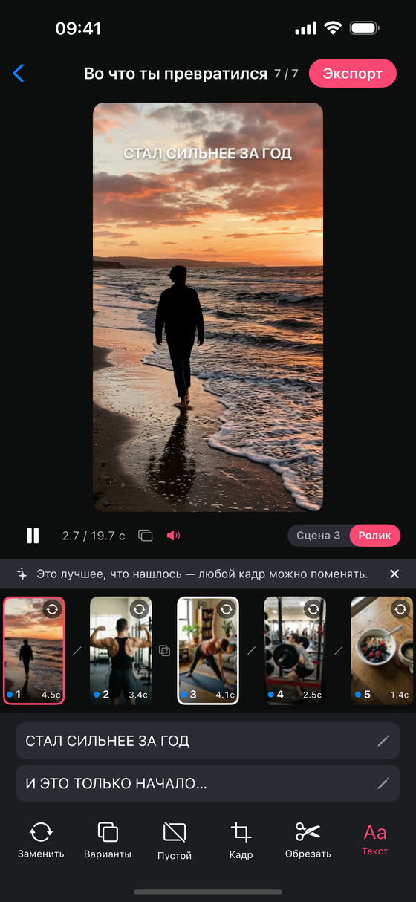
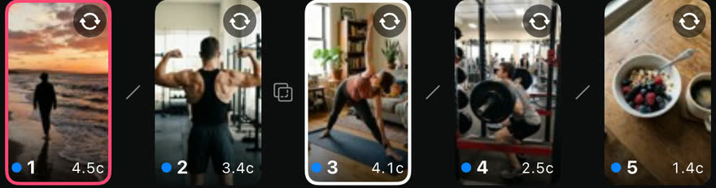
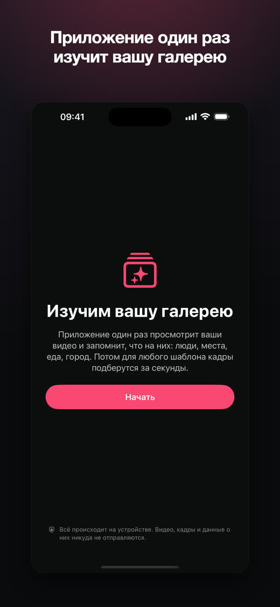
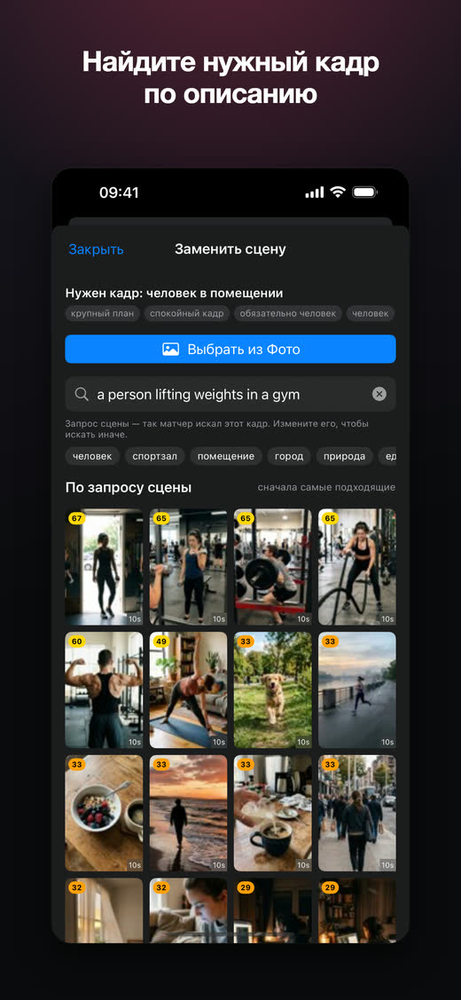
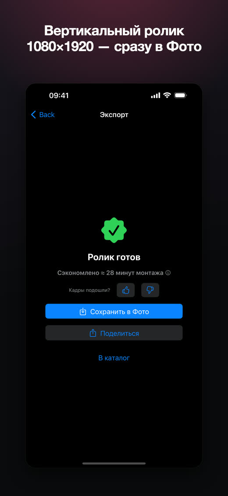

Выберите шаблон
В ленте видно, как ролик выглядит целиком: сцены, их длительности и подписи.
iPhone · iOS 17 и новее · версия 1.0.0
Выберите шаблон — Clipsa найдёт в вашей галерее подходящие кадры и соберёт вертикальный ролик. Всё считается на телефоне, видео никуда не отправляются.
Версия 1.0 бесплатная: без подписки, без покупок внутри приложения и без рекламы.

Приложение ничего не дорисовывает и не генерирует: оно выбирает и режет то, что вы уже сняли.

Полоса сцен
Каждая сцена шаблона — отдельный кадр из вашей медиатеки. Любой можно поменять.
Как это работает
В ленте видно, как ролик выглядит целиком: сцены, их длительности и подписи.
Приложение просматривает ваши видео прямо на iPhone и подбирает кадр под каждую сцену: что на кадре, какой план, где внутри клипа нужный момент.
Вертикальное видео 1080×1920, 30 кадров/с, со звуком и подписями шаблона. Или отправьте куда угодно через «Поделиться».
Экраны



Правки
Автоподбор — это первая версия ролика, а не приговор.
В любой сцене — вручную или поиском по описанию: «человек в зале», «кофе», «море».
Полоса кадров всего исходника: окно нужной длины перетаскивается туда, где действие.
Текст из шаблона переписывается своими словами — шрифт и положение остаются как в шаблоне.
Или подставить кадр из самого шаблона, если своего подходящего не нашлось.
Приватность
Анализ видео, подбор сцен и рендер выполняются только на вашем iPhone. Видео, кадры, результаты анализа и идентификаторы «Фото» не отправляются на сервер — сервера у приложения попросту нет. Аккаунт не нужен, регистрации нет.
Честно
Приложение один раз просматривает несколько сотен последних видео — около полутора минут. Остальную библиотеку дочитывает фоном и делает паузы, если телефон нагрелся.
Облачные видео участвуют в подборе по превью. Для экспорта оригинал скачивается по кнопке — приложение показывает, сколько осталось.
Без него ролик собирать не из чего. Подойдёт и режим «Выбранные фото» — тогда приложение работает только с отмеченными видео.
Готовые сценарии со сценами, длительностями и подписями. Материал в них — всегда ваш.
Подписка
Версия 1.0 — без подписки, без покупок внутри приложения и без рекламы. Платные тарифы появятся отдельным обновлением.
Оформить подпискуОплата пока не подключена — кнопка покажет пояснение. Данные здесь не собираются.
Подписка
Приложение сейчас бесплатно: без подписки, без покупок внутри приложения и без рекламы. Когда оплата заработает, эта кнопка приведёт на страницу оплаты.
Вводить здесь ничего не нужно — никакие данные на этой странице не собираются.
Понятно